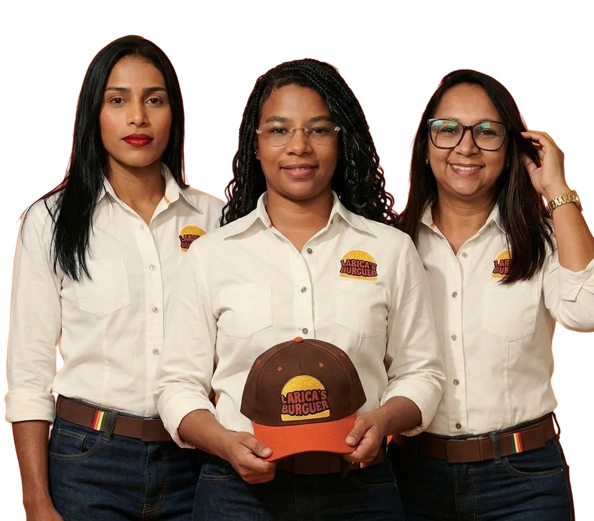

Missão
Proporcionar momentos de satisfação e conexão por meio da gastronomia, transformando o consumo de hambúrgueres artesanais em uma experiência que une sabor, criatividade e acolhimento, com atenção às necessidades dos clientes e responsabilidade na condução do negócio.